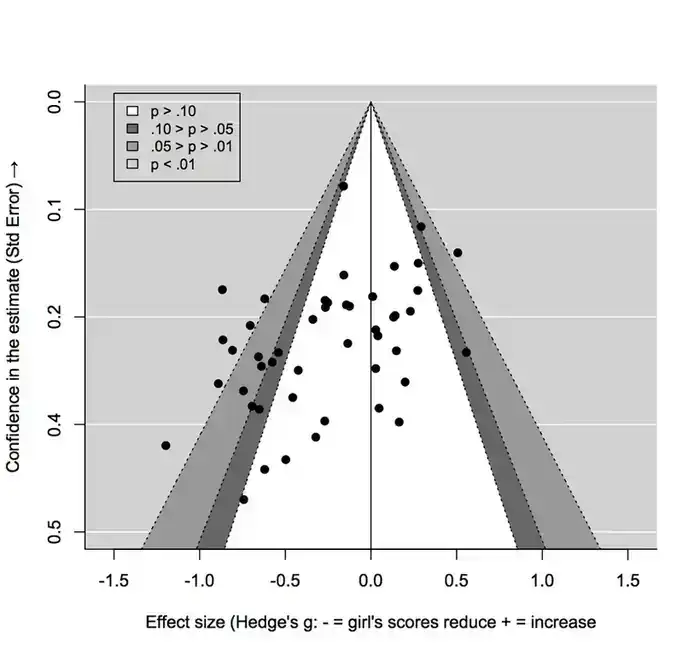
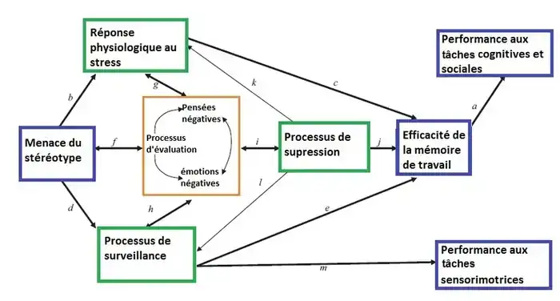
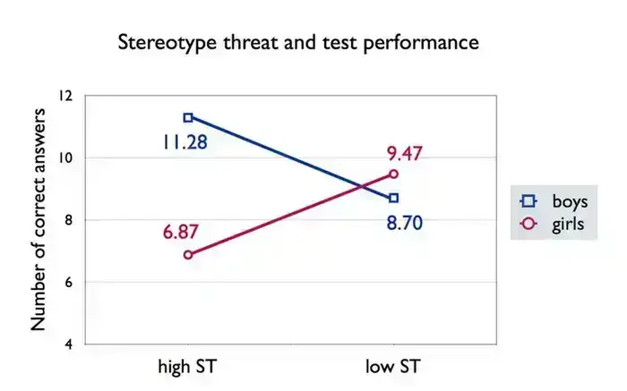

The claim
Steele and Aronson (1995) reported that Black students performed worse on a test when told it measured ability, compared with a condition framed as a laboratory task. The explanation was stereotype threat: awareness of a negative stereotype about one's group creates anxiety that impairs performance. Similar results were reported for women and maths.
Maps, diagrams and images






The replications
Small replications were mixed, and a large pre-registered multi-lab study in 2019 found effects close to zero for the standard manipulation. Meta-analyses find small average effects that vary widely by setting. The theory's defenders argue that the laboratory manipulation is a weak version of a real-world experience.
The practical implication — that subtle cues can affect performance — is plausible and much less well established than the original studies implied.
Documented: the original studies and their influence.
Failed: the large pre-registered replication.
Small: average effects in meta-analysis.
Contested: the real-world size.
The honest label: live debate.
Why it is in the archive
Because it is one of the most cited findings in social psychology and one of the clearest cases of a famous effect shrinking under replication.
Open resources on this topic
- BookStereotype threat : an examination of process — Walters, Alyssa Michelle, 1970- · 2000 (Internet Archive, free to read)
- BookERIC EJ1029630: An Initial Investigation into the Role of Stereotype Threat in the Test Performance of College — ERIC · 2014 (Internet Archive, free to read)
- BookERIC ED605250: Stereotype Threat Effects on Learning from a Cognitively Demanding Mathematics Lesson — ERIC · 2017 (Internet Archive, free to read)
- PapersOpen-access articles: DOAJ · PubMed Central · Internet Archive Scholar
- BooksPublic-domain and borrowable copies: Open Library · Project Gutenberg · Google Books
Cite this page
Momin, S. (2026). Stereotype Threat. The Larger World Archive. https://drsamonline.github.io/LARGE_GLOBE/stereotype-threat.htmlMomin, Sohil. “Stereotype Threat.” The Larger World Archive, 2026, https://drsamonline.github.io/LARGE_GLOBE/stereotype-threat.html.Momin, Sohil. “Stereotype Threat.” The Larger World Archive, 2026. https://drsamonline.github.io/LARGE_GLOBE/stereotype-threat.html.@misc{stereotype2026stereotype,
author = {Momin, Sohil},
title = {Stereotype Threat},
year = {2026},
howpublished = {The Larger World Archive},
url = {https://drsamonline.github.io/LARGE_GLOBE/stereotype-threat.html},
note = {Last reviewed 20 November 2026}
}Last reviewed 20 November 2026 · Corrections policy · this page is not peer reviewed
Sources for this page
- Wikipedia, “Stereotype threat” — the theory and the evidenceen.wikipedia.org
- Wikipedia, “Replication crisis” — the contexten.wikipedia.org
- Wikipedia, “Claude Steele” — the authoren.wikipedia.org
- Wikipedia, “Preregistration” — the method that changed the resulten.wikipedia.org